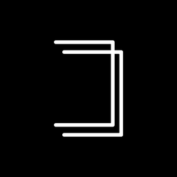

ALIGNCAMAvailableALIGNCAM is a camera for repeat photography, stop motion, growth records and product reshoots. The last photo sits semi-transparent over the viewfinder: line it up, then shoot.
iPhone · iOS 17 or later · Free · No in-app purchases
Screen recording: a guide circle framed on a drain cover, then the previous shot overlaid to line up the next one
Features
Every video below is a real screen recording, not a mock-up.
The perspective pad corrects while you frame: pull a tilted building upright, square up a poster shot from the side. What you see is what you get.
Draw two lines to straighten perspective; the whole canvas warps and the surroundings stay. Remove white edges, crop to the viewfinder ratio, and reuse the result as an onion-skin reference.
Pick a batch of photos and string them into a stop-motion clip. Speed curves, holds on the first and last frame, four click sounds, and a wheel that shows the rhythm frame by frame. Exports to your photo library.
More
Privacy
No account, no tracking, no network needed. The app only adds to your photo library and never reads it; importing goes through the system picker, so the app only gets the photos you choose. Privacy policy